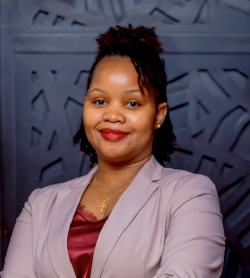
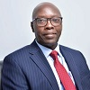

Professionals with decades of experience across law, banking, governance and consulting.

Ms. Susan Kavishe
Independent consultant in corporate governance & investment law.
Read more
Ms. Kavishe holds a Bachelor of Laws from Bangalore University and an LL.M in Taxation from the University of Dar es Salaam. She is a lawyer, advocate, notary public and commissioner for oaths and has served as a board director and secretary with over ten years of senior management experience.

Mr. Stanley Tsikiray
Independent consultant focusing on governance, banking & risk management.
Read more
Mr. Tsikiray is a qualified banking professional with 45 years’ experience across West, East and Southern Africa. He has held CEO and managing director roles at Standard Chartered Bank in multiple countries and serves on several microfinance and banking boards.

Mr. Joseph Tadayo
Advocate & consultant in corporate, commercial law and energy projects.
Read more
With over 30 years’ experience, Mr. Tadayo specialises in banking, corporate and commercial law, intellectual property, mining, energy and large‑scale projects. He has advised government institutions, banks and multinational companies on complex transactions and litigation.

Ms. Lilian Musingi
Consultant in corporate & commercial law, governance, banking & finance.
Read more
Ms. Musingi is a corporate and commercial lawyer with more than 22 years of experience spanning corporate governance, banking, finance, compliance, mergers & acquisitions, real estate, intellectual property, energy and insurance. She has served in senior management and non‑executive director roles across multiple industries.